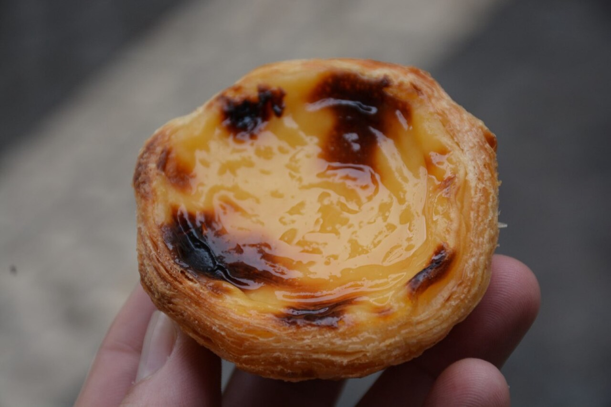

Pastel de nata
€1.40
Laminated dough rolled into a log, sliced, and pressed into each tin with a wet thumb. Custard of yolks, milk, lemon peel and a cinnamon stick, baked at 320 °C until the top blisters in about thirteen minutes.
- Out of the oven
- Every 25 minutes, 06:40 to 14:00
- Best eaten
- Within the hour, with cinnamon